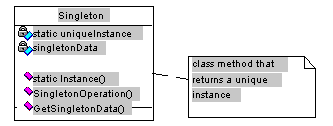
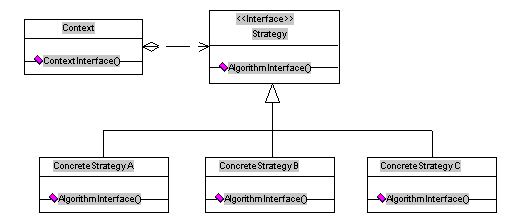
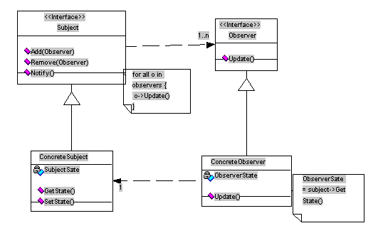

|
Design patterns should be independent of any implementation. However, I have chosen to illustrate this topic with examples in Delphi because it is a very informal and straightforward way to grasp the principles in action. I am not attempting to document any new patterns here.
If you explore the literature you will discover several formal structures for documenting patterns—Alexandrian form (Alexander et al. 1977), the GOF (Gang of Four) Form (Gamma et al. 1994), and the Coplien form (Coplien, 1995), among others.
The following design patterns will be covered:
- Singleton
- Template Method
- Strategy
- Observer
- Adapter
I will present each of these basic patterns in the following format:
- The name of the design pattern, with a description and some guidelines as to when to use it and the kinds of problems it can solve
- The structure of the pattern in UML v1.0 notation
- Sample implementation in Delphi 3 Object Pascal. The code samples are very simple, designed to illustrate the class structures or collaborating components that make up a given pattern, not to demonstrate problems and solutions.
Design Patterns Defined
A pattern is a vehicle for capturing and conveying expertise in a specific environment. As Christopher Alexander defines it , "each pattern describes a problem which occurs over and over again in our environment, and then describes the core of the solution to that problem, in such a way that you can use this solution a million times over, without ever doing it the same way twice". The Gang of Four book offers these insights into identifying what we mean by "a pattern"—
A pattern is a repeating solution to a problem within a context.
The problem specifies the need, the context the constraints, and the solution specifies how to meet the need within those constraints. - A pattern is a component of software design that has a name.
- A pattern is part of a catalog of named patterns.
Because a pattern is a characteristic of analysis and design, it cannot be defined in terms of a particular implementation, algorithm, or data structure. Rather, it is about why, when and how to go about creating a a specific solution. It has to be a good design that engenders a repeatable solution ("best practice") that has been proven to work in various contexts.
A design that has proven unworkable is termed an "anti-pattern". We can - and should - document them, along with the remedies, outcomes and lessons learnt from them.
You may have encountered several paradigms of patterns in the course of your work and study; for example, process patterns, analysis patterns, organizational patterns, etc. The term "design pattern" describes an architectural element of object-oriented software. In considering a low-level pattern, specific to a programming language and often using language-specific features, you may hear the term "idiom". A collection of named patterns, including rules and guidelines explaining how and when to apply them to a problem that cannot be solved by one pattern alone, is termed a "Pattern Language".
Capturing object-oriented/software-engineering design expertise according to a form of "design pattern" documentation should cover at least the following elements:
- Name, or phrase to describe the pattern
- Problem, or statement of the problem that it solves
- Context—when to apply it
- Solution—the components of the design, their relationships and responsibilities—but not the implementation, since implementations may vary according to context
Different "forms" of documenting design patterns may require additional elements. For example, the Coplien Form includes the elements of Force and Rationale; the GOF form includes Applicability, Consequences, Known Uses, et al.
Design patterns provide many benefits but they are not a silver bullet. They will not solve every problem that a software developer will be faced with. They won't make you an OO design guru, nor make your OO code instantly reusable. Misapplied patterns can make an OO solution more complicated than it needs to be, and they can create miscommunication if any members of the team don't understand the pattern terminology that you use.
Properly used, however, patterns are capable of providing significant benefits. For example, you can expect improvement in
- communication between designer and developers in a team by providing consistent terms for OO architectural elements and solutions.
- documentation—the use of pattern names in documentation reduces and simplifies the task and makes your documents easier to maintain
- reuse of successful designs and architectures
- allowing parts of a system to change independently of other parts
- code maintenance<—because they specify class and object interactions and their underlying intent
- speed of establishing the "right" design
- future design, by capturing the expertise of the people involved
Sample Pattern Implementations
Singleton Pattern
[ Back ]
Ensures a class has only one instance and provides a global point of access to it.
- Use when there must be exactly one instance of a class, and it must be accessible to clients from a well known point.
- Good when the sole instance should be extensible by subclassing, and clients should be able to use an extended instance without modifying their code.
Structure of the Singleton Pattern

Implementation of the Singleton Pattern
Two sample implementations are shown in TSingletonForm (uSingletonF.pas). The first one, returns a reference to allow the client class further control over the singleton instance. In this sample the Instance() class method acts as a well known point for clients to get a reference to the instance of TSingletonForm. This method acts as gatekeeper and it will only allow one instance of the class to be created.
type
TSingletonForm = class(TForm)
...
public
...;
class function Instance: TSingletonForm;
end;
implementation
{$R *.DFM}
var
SingletonFrm: TSingletonForm;
class function TSingletonForm.Instance: TSingletonForm;
begin
if not assigned(SingletonFrm) then
SingletonFrm := TSingletonForm.Create(Application);
result := SingletonFrm;
end;
The alternative implementation does the same thing but is presented using the Open() class method, which provides a single point of entry to TSingletonForm class and does not return an instance reference. In a production application, this method could take parameters to further initialize the singleton instance.
class procedure TSingletonForm.Open;
begin
Screen.Cursor := crHourglass;
try
if not assigned(SingletonFrm) then
SingletonFrm := TSingletonForm.Create(Application);
with SingletonFrm do
try
// do any form initialization here
Show;
except
on Exception do
begin
Free;
raise;
end;
end;
finally
Screen.Cursor := crDefault;
end;
end;
Both samples rely on a global reference (implementation scope) SingletonFrm to the instance of TSingletonForm. The SingletonFrm is used to provide lazy initialization or on-demand construction of the instance, since TSingletonForm is not created until the client class accesses one of its well known entry points (Instance() or Open()). In the destructor, the SingletonFrm reference is set back to nil.
destructor TSingletonForm.Destroy;
begin
SingletonFrm := nil;
inherited Destroy;
end;
The OnClose event handler calls Release(), which Frees the form instance by using an asynchronous windows message to allow all event handlers to complete safely.
procedure TSingletonForm.FormClose(Sender: TObject; var Action: TCloseAction);
begin
Release;
end;
Template Pattern
[ Back ]
Defines the skeleton of an algorithm in an operation, deferring some steps to subclasses without changing the algorithm's structure.
Good for
- encapsulating a policy that is deployed by many different agents
- reusing the code in a complex algorithm by encapsulating invariable parts and letting subclasses implement the behavior that can vary
- providing hook operations at specific points that a subclass can extend, but requiring to be callable through the template method on the base class.
Structure of the Template Pattern

Implementation of the Template Pattern
The Template pattern has several examples in the DelphiVCL, as might be expected in any object framework. In this sample, the VCL's TStream abstract class (classes.pas) implements stream copying in the template method CopyFrom(), which abstracts the algorithm for reading data from a stream and preparing its destination. TStream defers the implementation of Read() and Write() methods to its subclasses by declaring them as abstract methods. CopyFrom() uses Read() and Write() via the ReadBuffer() and WriteBuffer() methods, which are themselves template methods-since they are static and simply provide an interface to Read() and Write() virtual methods. Read() and Write() are the specific extension points that must be implemented in derived classes.
For implementation details, please review the VCL's classes.pas unit, the TStream abstract class, and the concrete stream classes: TCustomMemoryStream/TMemoryStream and TStringStream; or download Streams.hlp.
Since you want users of your class to override the specific extension points and not the interface provided by the template method, a template method is usually declared statically on the base class, and the primitive methods are virtual.
{ TStream abstract class }
TStream = class(TObject)
private
...
protected
procedure SetSize(NewSize: Longint); virtual;
public
// primitive operations to be provided by derived classes
function Read(var Buffer; Count: Longint): Longint; virtual; abstract;
function Write(const Buffer; Count: Longint): Longint; virtual; abstract;
function Seek(Offset: Longint; Origin: Word): Longint; virtual; abstract;
// template methods
procedure ReadBuffer(var Buffer; Count: Longint);
procedure WriteBuffer(const Buffer; Count: Longint);
// acts as template method by encapsulating the copy algorithm
function CopyFrom(Source: TStream; Count: Longint): Longint;
...
end;
// concrete class
TStringStream = class(TStream)
...
public
constructor Create(const AString: string);
// concrete class implementations - varying behavior
function Read(var Buffer; Count: Longint): Longint; override;
...
function Write(const Buffer; Count: Longint): Longint; override;
...
end;
{ TStream } // abstract class
...
// template methods
procedure TStream.ReadBuffer(var Buffer; Count: Longint);
begin
if (Count <> 0) and (Read(Buffer, Count) <> Count) then
raise EReadError.Create(SReadError);
end;
procedure TStream.WriteBuffer(const Buffer; Count: Longint);
begin
if (Count <> 0) and (Write(Buffer, Count) <> Count) then
raise EWriteError.Create(SWriteError);
end;
function TStream.CopyFrom(Source: TStream; Count: Longint): Longint;
const
MaxBufSize = $F000;
var
BufSize, N: Integer;
Buffer: PChar;
begin
if Count = 0 then
begin
Source.Position := 0;
Count := Source.Size;
end;
Result := Count;
if Count > MaxBufSize then
BufSize := MaxBufSize
else BufSize := Count;
GetMem(Buffer, BufSize);
try
while Count <> 0 do
begin
if Count > BufSize then
N := BufSize
else
N := Count;
Source.ReadBuffer(Buffer^, N);
WriteBuffer(Buffer^, N);
Dec(Count, N);
end;
finally
FreeMem(Buffer, BufSize);
end;
end;
{ TStringStream } // concrete class
...;
// concrete class implementation of primitive operations
function TStringStream.Read(var Buffer; Count: Longint): Longint;
begin
Result := Length(FDataString) - FPosition;
if Result > Count then
Result := Count;
Move(PChar(@FDataString[FPosition + 1])^, Buffer, Result);
Inc(FPosition, Result);
end;
function TStringStream.Write(const Buffer; Count: Longint): Longint;
begin
Result := Count;
SetLength(FDataString, (FPosition + Result));
Move(Buffer, PChar(@FDataString[FPosition + 1])^, Result);
Inc(FPosition, Result);
end;
...
Strategy Pattern
[ Back ]
Defines a family of interchangeable algorithms and encapsulates each one individually. Strategy lets the algorithm vary independently from clients that use it.
- Different strategies can be swapped as needed.
- Good for encapsulating many behaviors or algorithms that use data structures that a client shouldn't know about.
- Eliminates use of conditional statements to select the right behavior.
Unlike Template, which uses inheritance to vary parts of an algorithm, Strategy uses delegation and composition to exchange entire algorithms that are capable of being swapped dynamically in context. The actual algorithm is implemented via a context object that can be configured at run-time. The context object isolates client classes from specific dependencies on the algorithm interface by providing them with a more generic interface. An important aspect of the design of a Strategy pattern and its context object is to ensure that 1) any member of the family of related algorithms can be accommodated 2) subsequent concrete implementations, changes or additions can be adopted without modifying the interface.
Strategies allow you to make flatter class hierarchies, which are easier to manage and maintain. Class hierarchies that rely heavily on inheritance can get very deep (multiple levels) and are harder to maintain.
Structure of Strategy Pattern

Implementation of Strategy Pattern
In this sample (uStrategy.pas) monthly credit charges are computed for a hypothetical credit card. The strategy pattern allows the different family of algorithms used to compute monthly finance charges to be encapsulated and accessed uniformly through the interface of TFinanzeCharge abstract class. TRegularCharge and TPreferredCharge are concrete classes that encapsulate the different algorithms for computing monthly credit finance charges.
TMonthlyCharge implements the TContextCharge interface and is configured with the different concrete strategy objects. TContextCharge acts as a mediator between the client object and the strategy classes, helping to decouple dependencies between the client object and specific strategy/algorithm implementations.
// strategy interface (abstract class)
TFinanzeCharge = class
public
// returns monthly finance charge
function getCharge(const Balance: double): double; virtual; abstract;
end;
// Concrete Strategy 1
TRegularCharge = class(TFinanzeCharge)
public
function getCharge(const Balance: double): double; override;
end;
// Concrete Strategy 2
TPreferredCharge = class(TFinanzeCharge)
public
function getCharge(const Balance: double): double; override;
end;
The context interface is what clients will depend on when using specific strategies. Because the context is configured by the client, the client needs to be aware of the strategies/algorithms available. An alternative implementation could provide a default strategy if the context does not receive a valid instance during initialization.
// Context Interface
TChargeContext = class
public
function ComputeCharges(const Balance: double): double; virtual; abstract;
end;
// Concrete Context 1
This class acts as a mediator between the client and the strategy classes, and is configured by using composition and passing an instance of a concrete finance charge in its constructor.
TMonthlyCharges = class(TChargeContext)
private
FFinanzeCharge: TFinanzeCharge;
public
// context interface called by client classes
function ComputeCharges(const Balance: double): double; override;
// constructor configures the context object
constructor Create(aFinanzeCharge: TFinanzeCharge); virtual;
destructor Destroy; override;
end;
implementation
// TRegularCharge
function TRegularCharge.getCharge(const Balance: double): double;
begin
result := Balance * (REG_RATE / 12);
end;
// TPreferredCharge
function TPreferredCharge.getCharge(const Balance: double): double;
begin
// this could be a complex algorithm that takes into account the
// credit card holder's buying patterns and reward points accumulated.
result := Balance * (PREFERRED_RATE / 12);
end;
// Concrete Context 2
// TMonthlyCharges
constructorTMonthlyCharges.Create(aFinanzeCharge: TFinanzeCharge);
begin
inherited Create;
// aFinanzeCharge configures the context object
// this class takes ownership of aFinanzeCharge (will destroy it)
FFinanzeCharge := aFinanzeCharge;
end;
destructor TMonthlyCharges.Destroy;
begin
FFinanzeCharge.Free;
inherited Destroy;
end;
function TMonthlyCharges.ComputeCharges(const Balance: double): double;
begin
result := FFinanzeCharge.getCharge(Balance);
end;
Observer Pattern
[ Back ]
Defines a one-to-many dependency between objects so that when one object changes state, all its dependents are notified and updated automatically.
- Decouples information model from Interface model (MVC, Document-View)
- Good to synchronize changes in one object with other dependent objects when you don't know how many there may be.
- Good when one object needs to notify another object without knowing in advance which object it will be
The Observer pattern is a generalized version of a more specific pattern known as the Model-View-Controller (MVC), which is used to build interfaces in Smalltalk-80 and other OO class libraries. MVC aims at decoupling views (GUI classes) and models (problem domain objects) by establishing a subscribe/notify protocol between them. Whenever the model's data changes, it notifies any views that depend on it. In response, each view that has subscribed to receive notifications gets the opportunity to update itself.
With this approach you can attach multiple views to a model, to create distinct representations of each state the object can have. It allows you to create new views without affecting the model. The Controller classes in MVC define the way the user interface reacts to user input, such as keyboard events and mouse movements. However, some implementations of MVC, such as Java Swing (JFC framework), merge the View and Controller parts in the singular GUI classes.
Structure of Observer Pattern

Implementation of Observer Pattern
In this sample (uObserver.pas) TMySubject implements the TObservable interface, which represents the object that is being observed (the subject). The observed object will normally be a problem domain or data object. In this case, our data object contains x and y values, which are accessible via getX()/setX, getY()/setY methods.
TMyBars implements the TObserver interface, and is registered with TMySubject in order to be notified whenever the state of the subject changes (x and y values). It encapsulates two progress bars that will reflect the state changes. TMyBars pulls the X and Y values, whenever it receives a notification from TMySubject.
// Observer interface consists of a single update() method used to
// notify the observer to update itself to reflect the state change
// on the subject (observable object)
TObserver = class
procedure Update(ChangedSubject: TObservable); virtual; abstract;
end;
// Subject interface
TObservable = class
// Add and remove are used to subscribe/un-subscribe
procedure Add(Observer: TObserver); virtual; abstract;
procedure Remove(Observer: TObserver); virtual; abstract;
// notify subscribed/registered observers of state change
procedure Notify; virtual; abstract;
end;
An instance of TList (FObservers) is used to manage the references of all the observers that have subscribed to receive state change notifications.
// concrete observable classes
// Observable/Subject data object
TMySubject = class(TObservable)
private
FObservers: TList;
Fx: integer;
Fy: integer;
public
constructor Create;
destructor Destroy; override;
//TObservable
procedure Add(Observer: TObserver); override;
procedure Remove(Observer: TObserver); override;
procedure Notify; override
//MyData interface
function getX: integer;
function getY: integer;
procedure setX(value: integer);
procedure setY(value: integer);
end;
// Concrete Observer Object
TMyBars = class(TObserver)
private
FBarX: TProgressBar;
FBarY: TProgressBar;
public
constructor CreateBars(aParent: TWinControl);
destructor Destroy; override;
procedure Update(ChangedSubject: TObservable); override;
end;
implementation
// TMySubject Observable object
constructor TMySubject.Create;
begin
inherited Create;
FObservers := TList.Create;
end;
destructor TMySubject.Destroy;
begin
FObservers.Free;
inherited Destroy;
end;
procedure TMySubject.Add(Observer: TObserver);
begin
FObservers.Add(Observer);
end;
procedure TMySubject.Remove(Observer: TObserver);
begin
FObservers.Remove(Observer);
end;
procedure TMySubject.Notify;
var
i: integer;
begin
for i := 0 to pred(FObservers.Count) do
TObserver(FObservers.Items[i]).Update(Self);
end;
// Observer
constructor TMybars.CreateBars(aParent: TWinControl);
begin
inherited Create;
FBarX := TMyProgressBar.Create(nil);
FBarY := TMyProgressBar.Create(nil);
FBarX.Parent := aParent;
FBarY.Parent := aParent;
end;
destructor TMybars.Destroy;
begin
FBarX.Free;
FBarY.Free;
inherited Destroy;
end;
// When the observer is notified with the Update() method,
// it updates itself by pulling the values of X and Y.
procedure TMyBars.Update(ChangedSubject: TObservable);
begin
FBarX.Position := (ChangedSubject as TMySubject).getX;
FBarY.Position := (ChangedSubject as TMySubject).getY;
end;
Note that the Changed subject is passed in the update method. This allows the observer to register with multiple subjects and provide an integrated view of different data objects, since it knows which subject changed it can respond differently for each one (not shown in this example).
Adapter Pattern
[ Back ]
Converts the interface of a class into another interface clients expect. Adapter lets classes work together that couldn't do so otherwise because of incompatible interfaces.
- Use when you want to use an existing class and its interface does not match the one you need, or has an incompatible interface.
This pattern is also known as a wrapper and there are variations of it, such as "pluggable adapters," which are popular in Smalltalk and NextStep environments. The one presented here is known as an "object adapter" and consists of an adaptee, which defines the existing interface being adapted, and a target, which defines the interface the client class uses. The Adapter class inherits the target interface, and forwards the requests to the adaptee by using composition.
Structure of Adapter Pattern

Implementation of Adapter Pattern
In this sample (uSingletonF.pas) the TFormAdapter is used to adapt the TSingletonForm (adaptee) interface to that of the TObserver (target) interface, which is required in order to be able to attach to TMySubject as an observer and receive notifications of state changes. TFormAdapter forwards any received Update() requests to the specific method corresponding to that request on the TSingletonForm interface, the UpdateView() method.
TFormAdapter = class(TObserver)
private
;FAdaptee: TSingletonForm;
public
constructor Create(aForm: TSingletonForm);
procedure Update(ChangedSubject: TObservable); override;
end;
implementation
// TFormAdapter
constructor TFormAdapter.Create(aForm: TSingletonForm);
begin
inherited Create;
FAdaptee := aForm;
end;
procedure TFormAdapter.Update(ChangedSubject: TObservable);
begin
FAdaptee.UpdateView;
// adapted interface
end;
Conclusion
Patterns are a vehicle for capturing and documenting "best practices" in any field. In software engineering, design patterns allow you to improve your OO designs and architectures, improve documentation and facilitate maintenance of source code. If all members of your team understand the pattern names you are referring to then patterns allow a higher level of communication during analysis/design discussions. Using patterns allows you to leverage the expertise of others.
If you are an expert in your field, write down some patterns and have your peers review them. If you are not an expert, learn the published patterns. The more patterns you know, the better a designer and solution provider you will become and it will be reflected in improved quality of the products you build. This quality and aesthetic elegance in designs is referred to as "Quality Without A Name" (QWAN) by Christopher Alexander because it imparts incommunicable beauty and immeasurable value to a structure. (For more on QWAN, see the sources of information in the Appendix.)
Appendix
Additional Sources of Information
Patterns Home Page
http://st-www.cs.uiuc.edu/users/patterns/patterns.html
The Wiki Web
http://c2.com/cgi-bin/wiki
Doug Lea's Home Page and Patterns FAQ
http://gee.cs.oswego.edu/dl/
Doug Schmidt's Home Page
http://www.cs.wustl.edu/~schmidt/
Jim Coplien's Home Page
http://www.bell-labs.com/user/cope
Readings
- Alexander, C. et al. (1977), A Pattern Language, New York: Oxford University Press
- Coplien, J. O and Schmidt, D. C. (1995), Pattern Languages of program design. Reading MA: Addison-Wesley
- Gamma, E., Helm R., Johnson, R., and Vlissides J. (1994), Design Patterns, Elements of Reusable Object Oriented Software, Reading, MA: Addison-Wesley. AKA: The GOF (gang of four) book.
- Martin, Robert (1997), Object-Oriented Programming in C++, Object Mentor
- Rising, Linda (1998), The Patterns Handbook: Techniques, Strategies, and Applications, Cambridge University Press
- Vlissides, John (Object Magazine, March 1997), Patterns: The Top Ten Misconceptions
|